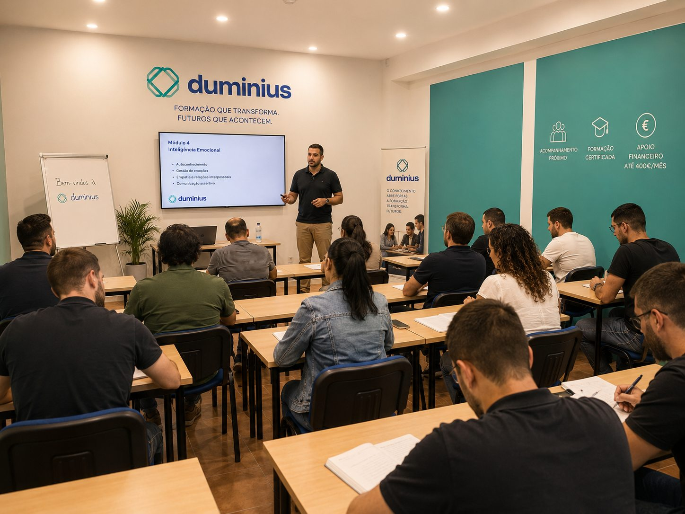
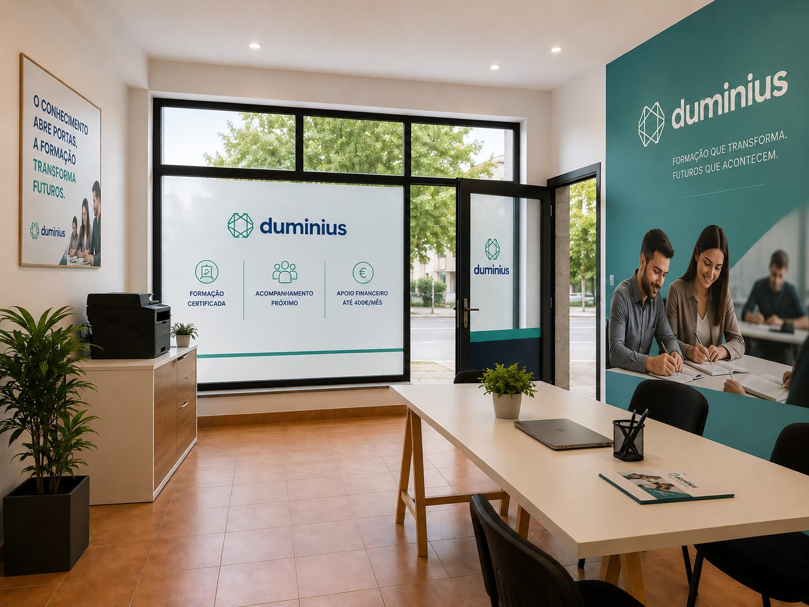
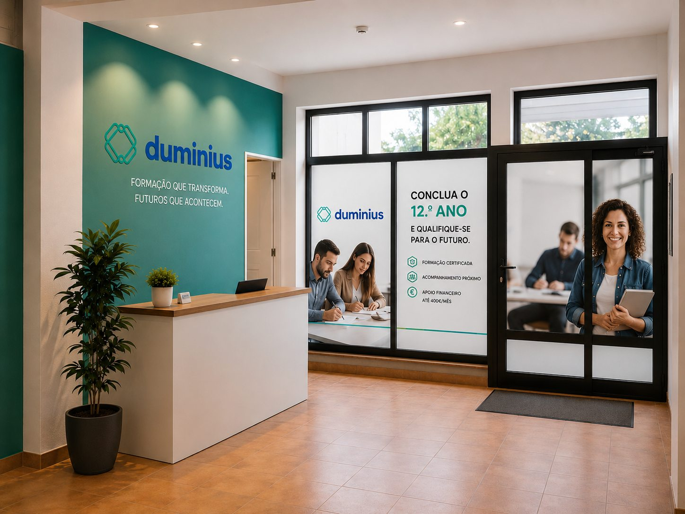
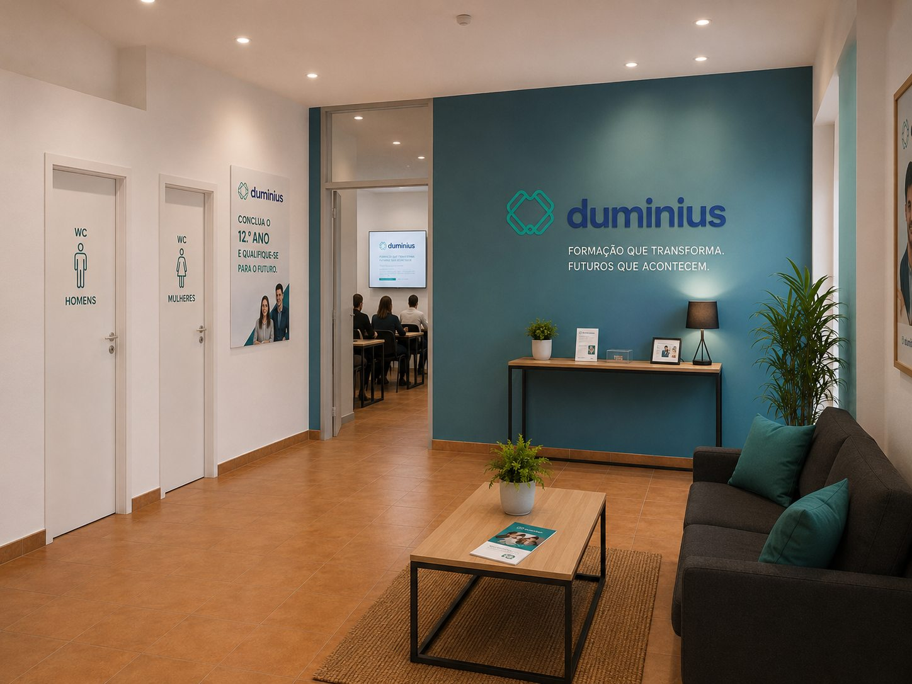
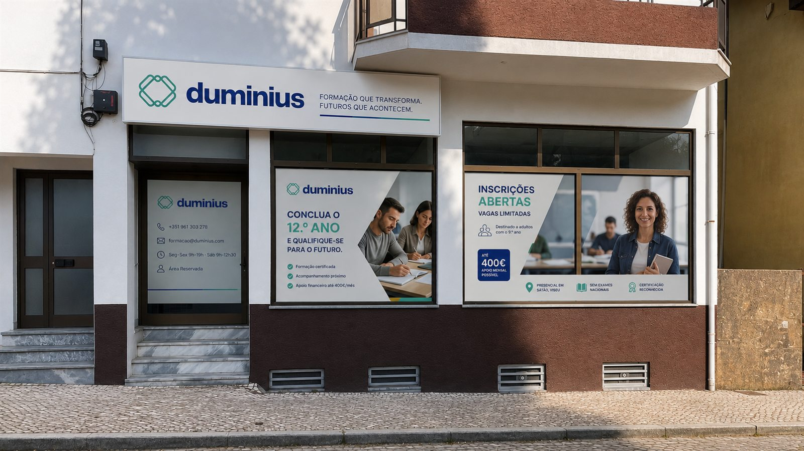

Guias práticos sobre o 12.º ano, apoios à formação e financiamento para empresas. Informação clara para tomares melhores decisões.

Cursos EFA, Formação Modular, RVCC e Qualifica — descobre a via certa para o teu caso.
Ler artigo
Com o DL n.º 115/2023 pode mobilizar o saldo do FCT para formação certificada até 31/12/2026.
Ler artigo
Cursos EFA, Ensino Recorrente, RVCC e Formação Modular — todas as vias flexíveis.
Ler artigo
Mais empregabilidade, melhores salários e acesso ao ensino superior. Sim, vale.
Ler artigo
Metodologia, duração, requisitos e avaliação — comparados lado a lado.
Ler artigoFormação certificada com apoio até 400€/mês. Vê como te podes inscrever.
Ver inscrições